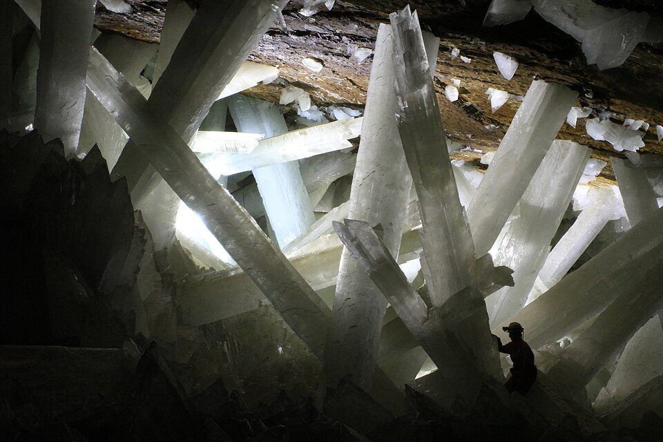

Rocas y minerales
Los ladrillos de la Tierra: cómo se forman las rocas, qué son los minerales y dónde están los cristales más asombrosos, de Naica a la geoda de Pulpí.


Un mineral es una sustancia natural sólida con una composición química concreta y una estructura ordenada de átomos, es decir, un cristal. Una roca es una mezcla de uno o varios minerales. El granito, por ejemplo, está hecho de cuarzo, feldespato y mica: los granitos blancos, rosados y negros que se ven en las encimeras.
Se conocen más de 6.000 minerales, pero solo unas decenas forman casi todas las rocas. Los más abundantes en la corteza son los feldespatos y el cuarzo.
Tres familias de rocas
- Ígneas: nacen del enfriamiento del magma. Si se enfría despacio en el interior, forma cristales grandes, como el granito. Si se enfría deprisa en la superficie, cristales diminutos, como el basalto de las coladas volcánicas.
- Sedimentarias: se forman cuando la arena, el barro o los restos de seres vivos se acumulan en capas y se compactan. Son la arenisca, la arcilla o la caliza, a menudo llena de fósiles. Cubren el 75 % de la superficie de los continentes.
- Metamórficas: son rocas transformadas por el calor y la presión sin llegar a fundirse. La caliza se convierte en mármol, la arcilla en pizarra.
El ciclo de las rocas
Ninguna roca es eterna. Las montañas se erosionan y sus granos acaban en el fondo del mar, donde se convierten en roca sedimentaria; esta puede hundirse con las placas, transformarse con el calor, fundirse y volver a subir como magma. Es el ciclo de las rocas, que recicla la corteza una y otra vez a lo largo de cientos de millones de años.
La escala de dureza de Mohs
En 1812 el mineralogista alemán Friedrich Mohs ordenó los minerales según cuál raya a cuál:
| Dureza | Mineral | Referencia |
|---|---|---|
| 1 | Talco | Se raya con la uña |
| 2 | Yeso | Se raya con la uña |
| 3 | Calcita | Se raya con una moneda de cobre |
| 4 | Fluorita | Se raya con un cuchillo |
| 5 | Apatito | Se raya con un cuchillo con esfuerzo |
| 6 | Ortoclasa | Raya el vidrio con dificultad |
| 7 | Cuarzo | Raya el vidrio |
| 8 | Topacio | |
| 9 | Corindón (rubí, zafiro) | |
| 10 | Diamante | El mineral natural más duro |
El diamante y el grafito de los lápices son el mismo elemento, carbono; solo cambia cómo se ordenan sus átomos. Los diamantes se forman a más de 150 km de profundidad y suben a la superficie en erupciones volcánicas muy rápidas.
Cristales gigantes


En 2000, unos mineros descubrieron en Naica (México), a 300 metros de profundidad, una cueva llena de cristales de yeso de hasta 12 metros de largo, los mayores conocidos. Crecieron durante cientos de miles de años en agua caliente rica en minerales. La cueva está a unos 50 °C y casi el 100 % de humedad: sin un traje refrigerado, una persona solo aguanta allí unos minutos.
En España está la geoda de Pulpí (Almería), descubierta en 1999 en una antigua mina de plata. Es una cavidad de unos 8 metros de largo tapizada de cristales transparentes de yeso, la mayor geoda visitable del mundo. Se puede visitar desde 2019.
Vídeos para entenderlo mejor
- Los MINERALES para niños - Clasificación y usos - CienciasSmile and Learn - Español · 617 mil visualizaciones
- ESTAS ROCAS NO SON NORMALES | NATIONAL GEOGRAPHIC ESPAÑANational Geographic España · 2 mil visualizaciones
Los vídeos son de YouTube y de sus autores. Se cargan solo al pulsar sobre ellos. Ver todos los vídeos →